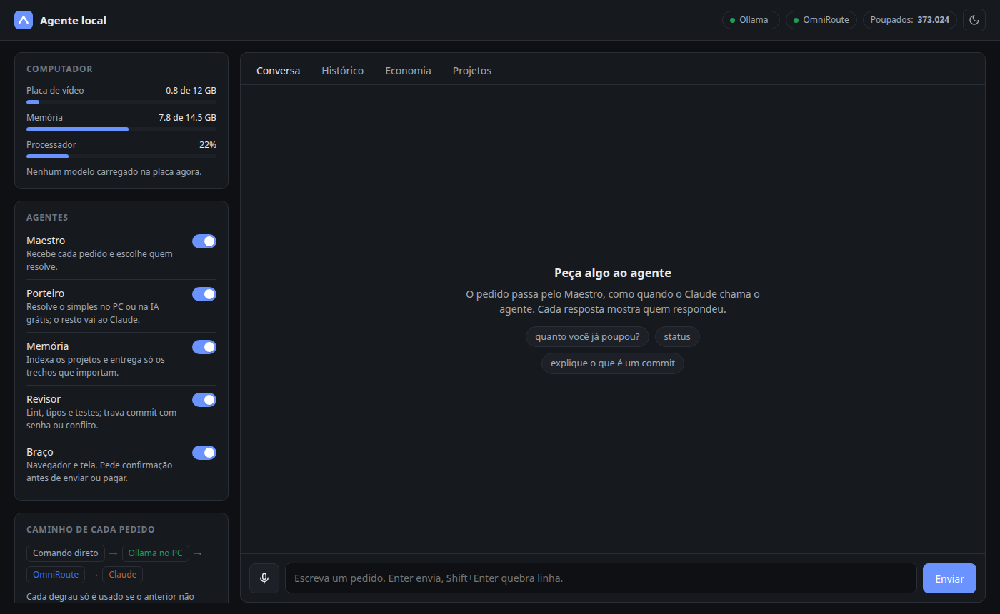

Let your GPU do the boring part.
Save Claude for the thinking.
Deixe sua placa de vídeo fazer o trabalho chato.
Guarde o Claude para pensar.
agente-local is a free AI helper that runs on your own computer and does the mechanical work for Claude Code: tests, git, pull requests, summaries, code review, project search and the browser. Claude gets a short answer instead of thousands of lines.
O agente-local é um ajudante de IA gratuito que roda no seu computador e faz o trabalho mecânico do Claude Code: testes, git, pull requests, resumos, revisão de código, busca nos projetos e navegador. O Claude recebe uma resposta curta em vez de milhares de linhas.
How it works
Como funciona
Every request climbs a cost ladder and stops at the first step that solves it.
Cada pedido sobe uma escada de custo e para no primeiro degrau que resolve.
Direct command
Comando direto
Tests, git, review and search run as plain programs.
Testes, git, revisão e busca rodam como programas comuns.
Local model
Modelo local
Ollama on your GPU summarizes, writes commits and answers simple questions.
O Ollama na sua placa resume, escreve commits e responde o simples.
Free cloud AI
IA grátis na nuvem
Optional: OmniRoute with your own free provider accounts.
Opcional: OmniRoute com suas contas grátis de provedores.
Claude
Only what really needs it: planning, real code changes, hard problems.
Só o que precisa dele: planejar, mudar código de verdade, problemas difíceis.
Maestro
Reads each request and sends it to the right agent.
Lê cada pedido e manda para o agente certo.
GatekeeperPorteiro
Answers the simple stuff on your PC or free cloud AI.
Responde o simples no PC ou na IA grátis.
MemoryMemória
Indexes your projects and hands Claude only the relevant snippets.
Indexa os projetos e entrega ao Claude só os trechos que importam.
ReviewerRevisor
Lint, types and tests; blocks commits with passwords or conflicts.
Lint, tipos e testes; trava commit com senha ou conflito.
ArmBraço
Drives the browser and screen, asking before anything risky.
Controla o navegador e a tela, e pergunta antes do que for arriscado.

What you need
O que precisa
The installer takes care of most of it.
O instalador cuida da maior parte.
| Minimum | Mínimo | Recommended | Recomendado | |
|---|---|---|---|---|
| System | Sistema | Linux · Windows 10/11 | Ubuntu 24.04+ · Windows 11 | |
| GPU | Placa de vídeo | none (CPU, slower) | nenhuma (processador, mais lento) | NVIDIA 8–12 GB |
| RAM | Memória | 8 GB | 16 GB | |
| Software | Programas | Python 3.10+, Git, Ollama, Claude Code | + Node.js (OmniRoute), Google Chrome (browser tools), GitHub CLI (PRs) | + Node.js (OmniRoute), Google Chrome (navegador), GitHub CLI (PRs) |
Models are picked for your GPU: 12 GB+ gets qwen3:8b, qwen2.5-coder:7b and qwen2.5vl:7b; 8 GB drops vision; 6 GB uses qwen3:4b; CPU-only uses qwen3:1.7b.
Os modelos são escolhidos pela sua placa: 12 GB ou mais usa qwen3:8b, qwen2.5-coder:7b e qwen2.5vl:7b; 8 GB fica sem visão; 6 GB usa qwen3:4b; só processador usa qwen3:1.7b.
Install
Instalar
One command. It asks before each optional step.
Um comando. Ele pergunta antes de cada passo opcional.
git clone https://github.com/felipebherve/agente-local.git
cd agente-local
./install.shAdd --voz for the voice shortcut (Ctrl+Alt+F) or --sim to accept every default.
Use --voz para o atalho de voz (Ctrl+Alt+F) ou --sim para aceitar tudo.
git clone https://github.com/felipebherve/agente-local.git
cd agente-local
powershell -ExecutionPolicy Bypass -File .\install.ps1No Git yet? Download the ZIP from GitHub, extract it and run the same last line inside the folder. Add -Voz or -Sim.
Ainda não tem Git? Baixe o ZIP no GitHub, extraia e rode a última linha dentro da pasta. Use -Voz ou -Sim.
What the installer does
O que o instalador faz
- Checks Python and Git (on Windows, installs them with
wingetif missing). - Installs Ollama if missing.
- Creates the agent's own Python environment in
.venv. - Offers to install OmniRoute (optional).
- Runs
agente init: detects your GPU, downloads the right models, writesconfig.yamland registers the agent in Claude Code and Claude Desktop. - Creates the Agente local shortcut, which opens the panel in your browser.
- Confere Python e Git (no Windows, instala pelo
wingetse faltar). - Instala o Ollama se faltar.
- Cria o ambiente Python do agente em
.venv. - Oferece instalar o OmniRoute (opcional).
- Roda o
agente init: vê sua placa, baixa os modelos certos, escreve oconfig.yamle registra o agente no Claude Code e no Claude Desktop. - Cria o atalho Agente local, que abre o painel no navegador.
Something wrong? Run agente doctor: it checks every piece and tells you what to fix.
Deu algo errado? Rode agente doctor: ele confere cada peça e diz o que corrigir.
Connect your accounts
Conectar suas contas
The agent never stores a password. It uses the logins you already have.
O agente nunca guarda senha. Ele usa os logins que você já tem.
Claude
Sign in to Claude Code as usual. The agent is an MCP tool inside it; agente init registers it.
Entre no Claude Code como sempre. O agente é uma ferramenta MCP dele; o agente init registra.
GitHub
Run gh auth login once. The agent uses it to push and open pull requests.
Rode gh auth login uma vez. O agente usa isso para push e pull requests.
Browser
Navegador
The Arm uses its own Chrome profile. Sign in to sites there once; logins stay in Chrome.
O Braço usa um perfil próprio do Chrome. Entre nos sites por ele uma vez; os logins ficam no Chrome.
Connect your OmniRoute (free cloud AI, optional)
Conectar o seu OmniRoute (IA grátis na nuvem, opcional)
- Install and start it:
npm install -g omniroutethenomniroute. - Open
http://localhost:20128, go to Providers and connect a provider with your own free account (for example Groq, Gemini or NVIDIA NIM). - In
config.yaml, setomniroute.ligado: trueand list the models in order underomniroute.modelos:
- Instale e ligue:
npm install -g omniroutee depoisomniroute. - Abra
http://localhost:20128, vá em Providers e conecte um provedor com a sua conta grátis (por exemplo Groq, Gemini ou NVIDIA NIM). - No
config.yaml, coloqueomniroute.ligado: truee liste os modelos em ordem emomniroute.modelos:
omniroute:
ligado: true
url: http://127.0.0.1:20128/v1
modelos:
- groq/llama-3.3-70b-versatile
- gemini/gemini-2.5-flashThe agent tries the first model, then the next. If OmniRoute is off, it skips straight to Claude. You are responsible for following each provider's terms; prefer providers with an official free tier.
O agente tenta o primeiro modelo, depois o próximo. Se o OmniRoute estiver desligado, ele pula direto para o Claude. Cada pessoa é responsável por seguir os termos dos provedores; prefira os que têm plano grátis oficial.
Using it
Usar
Nothing special: Claude Code calls the agent on its own. Try asking:
Nada especial: o Claude Code chama o agente sozinho. Experimente pedir:
"commit this"
"open a draft PR"
"faz o commit"
"abre um PR em rascunho"
"where is the login handled?"
"onde fica o login?"
"how much did you save?"
"quanto você poupou?"
Safety and privacy
Segurança e privacidade
Only where you allow
Só onde você deixa
Reads only the folders and runs only the commands listed in config.yaml.
Só lê as pastas e só roda os comandos listados no config.yaml.
Asks first
Pergunta antes
Confirmation before submit, login, pay, buy, delete or password fields. Turn off the Arm in the panel to stop it at once.
Confirmação antes de enviar, entrar, pagar, comprar, apagar ou campo de senha. Desligue o Braço no painel para parar na hora.
Stays on your PC
Fica no seu PC
No telemetry and no server of ours. Only what you send to OmniRoute providers or Claude leaves your machine.
Sem telemetria e sem servidor nosso. Só sai do PC o que você mandar para o OmniRoute ou para o Claude.
FAQ
Is it really free?
É gratuito mesmo?
Yes. The agent and the local models are free. You still need your own Claude plan for Claude Code; the agent just makes it last longer.
Sim. O agente e os modelos locais são grátis. Você ainda precisa do seu plano do Claude para o Claude Code; o agente só faz ele render mais.
Does it work without an NVIDIA GPU?
Funciona sem placa NVIDIA?
Yes, on the CPU with smaller models. It is slower, so turning on OmniRoute helps.
Sim, no processador, com modelos menores. Fica mais lento, então ligar o OmniRoute ajuda.
Does it work with Claude Desktop too?
Funciona no Claude Desktop também?
Yes. agente init registers it in both Claude Code and Claude Desktop.
Sim. O agente init registra nos dois: Claude Code e Claude Desktop.
How do I uninstall?
Como desinstalo?
Delete the folder and the Agente local shortcut, then remove the agente-local block from ~/.claude.json and ~/.claude/CLAUDE.md.
Apague a pasta e o atalho Agente local, e tire o bloco agente-local de ~/.claude.json e de ~/.claude/CLAUDE.md.
Why is the code in Portuguese?
Por que o código está em português?
It was built in Brazil, in Portuguese. The docs are in English and Portuguese, and contributions in either language are welcome.
Foi feito no Brasil, em português. A documentação está em inglês e português, e contribuições nas duas línguas são bem-vindas.